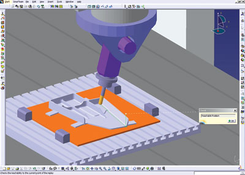
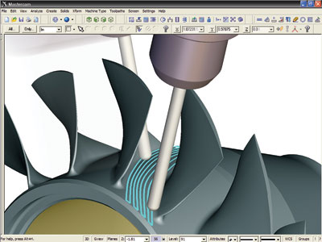
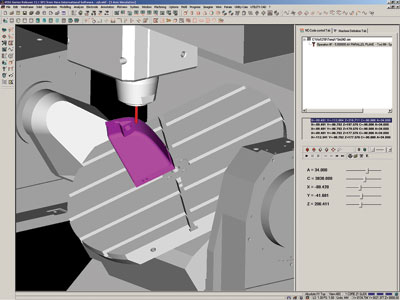

|
Dr. Juergen Lauscher, IBM: Takým yolu doðrulama kabiliyeti CAM yazýlým ürünleriyle geçmiþte geliþtirildi. Talaþ kaldýrma kaldýrma simülasyonu standart bir fonksiyon olarak CAM ürünlerinin yapýsýnda yer aldý. Bundan sonraki deðiþim basamaðý ise tezgah simülasyonlarýnýn birleþtirilmesidir. Tezgah simülasyonunun da yerleþtirildiði CAM yazýlýmlarýnda, kullanýcý kolaylýkla takým yolu tanýmlamasý ve doðrulamasýný görebilir. Bu da üretim hazýrlýðýný hýzlandýrýr. ISO koduna dayalý gerçekçi bir NC tezgah simülasyonu, iþleme kalitesini yükseltir ve tek defada parçayý doðru iþleyerek harcanan zamaný azaltýr.
NC programlamada ikinci büyük eðilim; otomasyon seviyesinin yükseltilmesidir. NC programcýlarý tarafýndan bir birleþtirilmiþ üretim iþlem zinciri içerisinde, tasarýmcýlar tarafýndan oluþturulmuþ tolerans parametrelerinden veya fonksiyonellik gibi teknolojik bilgilerden yararlanýlabilir.

IBM den Dr. Juergen'nin iþaret ettiði üzere, CAM ürünlerinde talaþ kaldýrma
operasyonunun simülasyonu standart bir fonksiyon olarak tanýmlanmýþtýr.
Chuck Mathews, DP Technology: DP teknolojisindeki ESPRIT müþterilerimizde baþlýca görülen üç eðilim þunlardýr; yüksek iþleme döngüleri, CAD' den CAM'e özellik deðiþimi, ve çok iþlevli dik iþleme tezgahlarýn için programlama desteði. ESPRIT müþteriler kesme hýzý daha yüksek, takým ömrü daha uzun ve daha kýsa döngü zamanýna sahip çok fazla geliþmiþ iþleme döngüleri isterler. Ayný zamanda bu geliþmiþ iþleme döngüleri artan kompleks geometriye sahip parçalarý da uygulanabilmelidir. Bu eðilim geçen bir çok yýlda hep ayný kaldý ve müþterilerimizin atölye verimliliðini geliþtirmeye yönelik taleplerinden dolayý bu eðilimin devam edeceðini düþünüyoruz.
Bizim ESPRIT müþterilerimiz genellikle parçalarýný CAD sistemlerde üç boyutlu katý modeller olarak tasarlarlar. Benzer olarak, sanayi bu modellerin geometrisinin tezgah programlarý için CAM sistemine dönüþtürülebilir olmasýný ister. Yeni ortaya çýkan bir eðilim, CAD programlarýnýnda tanýmlanan bazý özelliklerin CAM programlarýna dönüþtürülmesini kapsamaktadýr. Bu dönüþüm tasarýmýn amacýný ve geometrik toleranslarý kapsayan bir dönüþümdür. Bu dönüþüm CAM operatörüne ne yapmasý gerektiðine dair iyi bir tanýmlama vermektedir. ESPRIT altý büyük CAD sistemi olan Autodesk Inventor, Solid Edge, SolidWorks, CATIA, Unigraphics ve Pro/ENGINEER için iþleme operasyonlarýnýn direkt olarak orijinal CAD tasarýmlarý tarafýndan desteklenmesi üzerinde odaklanmaktadýr.
Giovanni Opimitti, Vero International: Bugün kalýp imalatý pazarý acýmazsýz küresel bir rekabet tarafýndan þekillendirilmektedir. Kalýp üreticilerinin kar edebilmeleri için ürünlerin hýzlý bir þekilde daðýtýlmasý çok önemlidir. CAM iþlemlerini þekillendiren, alýnan datalarý, analizleri, üç boyutlu tasarýmlarý, iki boyutlu çizimleri, iki ile beþ eksenli dik iþlemeleri, tel ve dalma erozyonlarý (EDM) ve veri aktarým dönüþümünü kapsayan çok çeþitli özel olarak yapýlmýþ ekipmanlarýn daðýtýlmasýnda CAM yazýlým tedarikçileri önemli rol oynamaktadýr.
Biz þuna inanýyoruz ki; büyük geliþme alanlarý içerisinde özellik tanýma beþ eksenli iþleme operasyonlarý ve kullaným kolaylýðý CAM programlarýnýn saðladýðý en önemli unsurlardýr. CAM programlarýnýn analiz kapasitesi göz önüne alýndýðýnda, CAM ürünlerinin dýþarýdan alýnmýþ datalarla çalýþabilecek verimli ve otomatik ekipmanlar sunmasý gerekmektedir. Bu olgu, kullanýcýlarýn problemleri tasarým aþamasýnda tespitini saðlayacaðýndan, üretim alanýnda tespit edilecek hatanýn oluþturacaðý maliyetti azaltacaktýr.
Unsur tanýma, yazýlým tedarikçileri tarafýndan üzerinde durulmaya devam edilen bir olgu oldukça, daha çok þey baþarýlacaktýr. Unsurlarýn üretilebilirlik durumlarýný otomatik olarak tanýmlanarak, izlenecek yolun sistem tarafýndan belirlenmesi kullanýcýlar için çok önemlidir. Beþ eksenli iþleme ile kalýp üretimi için her geçen gün daha fazla tanýnan paha biçilemez bir ekipman haline gelmektedir. Özellikle de kalýp derin bir oyuða sahipse. Örneðin, Vero'nun, 5 eksenliler için, en son ortaya çýkardýðý VISI yazýlým serisi; 2.5 eksenli iþleme özelliðine sahip, 2 ve 4 eksenli tel EDM, 3-D ve HSM CAM'i tamamlayýcý olmuþtur.
VISI'nýn içerisine yerleþtirilen. Beþ eksende hareket edebilme kapasitesine sahip VISI yazýlýmlý bir sistem, kalýp iþleme operasyonlarýnda gerekli olan spesifikasyonlarý göstermekle kalmayacak ayný zamanda zaman kazanýlmasýný ve üretim hatalarýnýn düþürülmesini saðlayacak bir teknoloji ürünüdür.
Vynce Paradise, NX Machining and Tooling: Temel trendler, beþ eksenli, yüksek hýzlý dik iþleme yapan, ve çok fonksiyonlu tezgahlar (frezeleme+tornalama) gibi geliþmiþ ve verimli olarak kendini gösteriyor. Ayrýca bir baþka eðilim de, standart iþlem þablonlarýný ve iyi tanýmlanmýþ iþleme operasyon metotlarýný kullanarak, parçayý tanýyacak, iþ otomasyonu yapabilecek otomatik programlarýn kullanýmýna yöneliktir. Kalýp ve ekipmanlarýn çoðunlukla eskisinden tercih edilen sýnýrlý eksenli tezgahlar yerine, beþ eksenli tezgahlar tercih ediliyor.
Yukarýda bahsettiðimiz, çok eksenli ve çok fonksiyonlu tezgah programlarý ve teknolojileri üzerine odaklanýyoruz. Ayrýca otomasyon programlanmasý için de çok büyük yatýrým yaptýk. UGS, NX iþleme operasyonu, içinde bulundurduðu iþleme operasyonu simülasyonu ve postprosesörü ile NC için kapsamlý bir çözüm sunuyor.
Mark Summer, CNC Software Inc: Günümüzde, CAM yazýlým teknolojisinde bir çok eðilimve deðiþimler var. Otomasyon, bir yazýlým paketindeki kullaným kolaylýðý ve iþleme hýzý günümüzün yazýlým paketlerinde üzerinde durulacak en önemli baþlýklardýr. Örneðin, "akýllý takým yollarý"nýn ne yapýlmasý gerektiðine karar vermeleri bir otomasyon metodudur. Herhangi bir parçanýn özelliklerinin tanýmlanabiliyor ve parçanýn iþlenebiliyor olmasý baþka bir metottur. Katý bir modele sahip olduðunuz zaman, özellik tanýmlamasý ile sahip olduðunuz yazýlým elinizdeki modeldeki boþluklarý, deliklere ve yüzeylere bakarak onun tam olarak ne olduðunu size söyler ve daha önceden sahip olduðu gerekli bilgiyi ve iþleme operasyonlarýný kullanarak otomatik olarak bu cepleri açar, delikleri deler ve yüzeyleri oluþturur. Bir önceki operasyonda kullanmýþ olduðumuz bilgi ve iþleme operasyonlarýný ileride kullanabileceðimiz bir parçada uygulayabilirsiniz. Bu da size büyük bir zaman kazanýmý saðlar.
Kullanýcýlarýn etkileþimlerini azaltacak ve ayný zamanda sezgisel olarak bir ara yüz oluþturarak, müþterilerin programlarý daha kolay kullanmasý saðlanabilir. Eðer sizin oluþturduðunuz ara yüz ayarlanabilir bir arayüz ise, bir kullanýcý kendi istediði arayüzle çalýþabilir ve bu durum kullanýcýnýn daha az etkileþimini gerektirir. Tabi ki bu da zamandan tasarruf ettirir ve paket programýn müþteri tarafýndan kolayca kullanýlabilmesini saðlar.
Farklý yazýlým programlarýnýn müþterilerin ihtiyaçlarýna cevap verebilmesi ile otomasyon yazýlým uygunluðu benzerdir. Ve yüksek hýzlý iþleme de popüler olarak geliþen bir diðer trenddir.
2) Eðer varsa, müþterilerin satýn alma alýþkanlýklarý ile ilgili deðiþimler nelerdir? Onlarýn en çok ilgilerini çeken þey nedir? Daha talepkar ya da daha alakadar mý oluyorlar?
Bill Gibbs, Gibbs and Associates: Bugün CAM alýcýlarýnýn bir çoðu CAM sistem ve teknolojileriyle ilgili belli bir bilgiye sahipler, bu yüzden de genelde müþteriler bilinçli. Geleceðe yönelik daha az karþýlaþtýrma ve çok daha özel yönetim senaryolarý görmekteyiz. Bundan dolayý da geçmiþte alýcýlarý olumsuz etkileyen temel noktalarda müþteri potansiyeli sýfýra yýkýndýr. Müþteriler CAD dosya formatýnda aldýklarý datalarýn CAM sistemleri tarafýndan doðru bir þekilde okunabileceðinden emin olmak istiyorlar. CAD satýcýlarýný "iþbirliktelik" sertifikalarý bunu saðlamanýn bir yolu olmasýna karþýn alýcýlarýn bazýlarý yine de belgelerinin okunabilir olduðunu görmek istiyorlar. Bazý müþteriler, hazýrda var olan CAM sistemlerini kullanmayý tercih ederken, çok daha fazlasý, baþlangýçtan itibaren operasyonel kullaným saðlayacak anahtar teslim çözümü tercih etmektedir. Tezgahlarýn kompleksliði müþterilerin bunlarý kullanmaya istekli olup olmamalarý noktasýnda büyük rol oynar. Müþteriler için bir tezgahý çalýþýlabilir yapan önemli bir nokta ise bu geliþmiþ tezgahýn sunmuþ olduðu kolaylýk ve özellikleri kullandýracak postprosesörlerin bulundurmasýdýr. Ama ne yazýk ki bir çok üretici önceki postprosesörlerle ciddi problemleri olan çok fonksiyonlu iþleme operasyonlarý yapmaktadýrlar.

Çok eksenli (multi-axis) iþleme, ekstra esneklik kazandýrmak için tasarlandý.
Mastercam'in çok eksenli iþleme için geliþtirilmiþ araçlarý,
operasyonlarý daha hýzlý ve yeterli yapabilmek için tasarlandý.
Vynce Paradise, NX Machining and Tooling: Müþteriler genel olarak CAM yazýlýmlarýný, postprosesörleri, besleme ve hýz veri tabanlarý ve tezgah simülasyon modellerini kapsayan bir çözüm istiyorlar. UGS, denenmiþ postprosesör, üç boyutlu simülasyon modeli ve þablonlar içeren, bütün tezgah destek kitlerine sahip ürünler geliþtirmek için, Mori Seki gibi büyük tezgah üreticileri ile iþbirliði yapýyor. Kullanýcýlar en son kullandýklarý ekipmanlarýn deðerini maksimum yapmak için daha geliþmiþ yazýlýmlar arýyorlar. Buna raðmen kullanýmý kolay programlarý da istiyorlar. NX 4 ile UGS sahip olduðu üretim sihirbazýyla, tecrübeli kullanýcýlarýn daha az donanýmlý programcýlara, kullanabilecekleri arayüzler oluþturmasýný saðlýyor.
Peter Dickin, Delcam: Kullanýcýlar yatýrýmlarýný yaparken artýk daha fazla dikkatli olmaya baþladýlar. Bu da pazarlanan ve vaat edilen faydalarý sunmada baþarýsýz olan sistemlerle ilgili hikayelerin duyulmasýndan kaynaklanmaktadýr. Bu durum özellikle þirketlerin OEM ile uygunluk göstermesi amacýyla satýn aldýðý kýsmi sistemlerde ortaya çýkmaktadýr. Bir þekilde satýcýnýn satmýþ olduðu sistemin oluþturacaðý hatalara karþý size taahhüt ettiði garanti somutlaþamamaktadýr. Tezgahý kullanýcýlarý sýk sýk þunu görmektedirler; OEM'ler tarafýndan kullanýlan güçlü tasarým sistemleri özel CAM yazýlým sistemleri kadar, parça iþleme konusunda baþarýlý deðillerdir. Malzeme satýcýlarý ve diðer taþeronlar kendi iþletmelerine benzeyen referans iþletmelere ihtiyaçlarý olduðunu anlamaya baþlýyorlar. Ayrýca müþteriler kendi iþleri ile direkt olarak alakalý olmayan isim yapmýþ firmalardan gelen referanslarla ilgilenmiyorlar. Diðer bir deðiþimde ekipmanlarýn ucuzladýkça beþ eksenli ve yüksek hýzlý tezgahlarýn küçük iþletmelerde yayýlmasýdýr. Fabrika sahibi ve yöneticiler tezgahlarýný daha titiz ve tedbirli kullanabilmek için yazýlým programlarý almaktadýrlar. Tüm bunlardan sonra olabilecek en kötü þey, bir çalýþan olarak yapmýþ olduðunuz sistemin seçimi yanlýþ ise iþinizi kaybetmenizdir. Ýþletme sahibinin yapmýþ olduðu yatýrým kararýnýn yanlýþlýðý iþini ve evini kaybediyor olmasýna sebep olabilir.
Bill Hasenjaeger, CGTech: Bizim kullanýcýlarýmýzýn iþlerine devam edebilecekleri "sadece çalýþan" ve dolayýsýyla firmalarýn çalýþmasýný saðlayan yazýlýmlar istiyorlar. Bir müþteri sahip olduðu eþsiz iþ ve teknolojik gereksinimler için bazý küçük ayarlarýn uygulamasýný talep edebilir. Veya onlar kendi yazýlýmlarýmýzý onlarýn iþlem metotlarýna entegre edebilmelerine yardým etmemiz için onlar bizi görevlendirebilirler. Ama rutin seçimleri göz önüne almazsak müþteriler bizden hýzlý olarak baþlayabilecekleri kýsa zamanda öðrenebilecekleri ve sadece kendi iþlerini idare edebilecekleri kadar detayýný bilmek istedikleri yazýlýmlar isterler.
Büyük firmalar daha az kendi iç mühendislik uzmanlýklarý üzerinde odaklanýrlar. Büyük iç mühendislik sistemlerinin 1980'li ve 1990'li iþletmelere katkýsý daha küçüktü veya hiç yoktu. Buna raðmen mühendislik sisteminin desteðine olan ihtiyaç hiçbir zaman yok olmadý, bunun yerine bu ihtiyaç dýþ firmalardan giderildi. CGTech müþterilerin eðitime ve VERICUT'ýn firmalarýn özel üretim iþlem ve metotlarýna entegrasyonunu desteklemek için gerekli olan entegrasyon servislerine artan talebi karþýlamak için dünya çapýnda personel çalýþtýrmak zorunda kaldý.
Chuck Matthews, DP Technology: Her yýl ESPRIT müþterileri daha titiz hale geliyor, DP teknolojide buna ürünlerini geliþtirerek cevap veriyor. Müþterilerimiz genel olarak saðlýk, havacýlýk, ve makine sanayisinde kullandýklarý parçalar için deðerleri üst seviyede olan ürünler istemektedirler. Verimlilik-kilit nokta- kompleks problemleri çözerken, kullanýcý ara yüzlerinin basitliðini, yazýlýmýn otomasyonunu ve sadeliðini gerektirir.
Giovanni Opimitti, Vero International: Biz þunu görüyoruz ki, CAM kullanýcýlarý karþý karþýya kaldýklarý ciddi rekabetçi ortamýn üzerlerinde oluþturduðu etkiden dolayý satýn aldýklarý yazýlým programlarý konusunda daha çok bilgileniyorlar. Bugünün tipik kullanýcýlarý birden çok ihtiyaçlarýný karþýlayacak kapsamlý ekipman istiyorlar. Müþterilerin çok çeþitli ve farklý yazýlým tiplerini öðrenme zamanlarý yok. Müþteriler ayrýca bir yazýlým paketinden baþka bir yazýlým paketine datalarýný aktarýrken kaybetmeyi de istemezler, örneðin bir tasarým yazýlýmýndan analiz paketine. Biz þunu görüyoruz ki firmalar sahip olduklarý elektronik dosyalarý organizasyon içerisinde ve dýþarýsýnda müþterilerle, hizmet bürolarýyla ve dýþarýdaki diðer kullanýcý noktalarý ile deðiþerek doküman ve kaðýt kalabalýðýndan kurtulmanýn faydasýný fark ettiler. Bu yüzden müþteri iliþkilerimizin çok sýký olmasý gerekiyor. Diðer bir ifade ile bizim yazýlýmlarýmýz tepeden inme olmaz. Bunun yanýn da þunu diyebiliriz ki, sahip olduðumuz VISI seri yazýlýmlarý müþterilerimizin isteklerine dayalý olan teknolojik iyileþtirmeler içermektedir.

Vero International dan Giovanni Opimitti'ye göre unsur tanýmlamasý (feature recognition),
5 eksenli iþleme kabiliyeti ve kullaným kolaylýðý CAM yazýlýmlarýndaki en önemli hususlardýr.
|